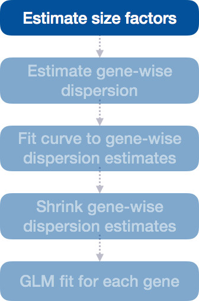

We completed the entire workflow for the differential gene expression analysis with DESeq2. The steps in the analysis are output below:
deseq1
Figure 1
We will be taking a detailed look at each of these steps to better understand how DESeq2 is performing the statistical analysis and what metrics we should examine to explore the quality of our analysis.
Step 1: Estimate size factors
The first step in the differential expression analysis is to estimate the size factors, which is exactly what we already did to normalize the raw counts.

deseq1
Figure 2
DESeq2 will automatically estimate the size factors when performing the differential expression analysis. However, if you have already generated the size factors using estimateSizeFactors(), as we did earlier, then DESeq2 will use these values.
To normalize the count data, DESeq2 calculates size factors for each sample using the median of ratios method discussed previously in the ‘Count normalization’ lesson.
MOV10 DE analysis: examining the size factors
Let’s take a quick look at size factor values we have for each sample:
These numbers should be identical to those we generated initially when we had run the function estimateSizeFactors(dds). Take a look at the total number of reads for each sample:
## Total number of raw counts per samplecolSums(counts(dds))
We see that the larger size factors correspond to the samples with higher sequencing depth, which makes sense, because to generate our normalized counts we need to divide the counts by the size factors. This accounts for the differences in sequencing depth between samples.
Now take a look at the total depth after normalization using:
## Total number of normalized counts per samplecolSums(counts(dds, normalized=T))
You might have expected the counts to be the exact same across the samples after normalization. However, DESeq2 also accounts for RNA composition during the normalization procedure. By using the median ratio value for the size factor, DESeq2 should not be biased to a large number of counts sucked up by a few DE genes; however, this may lead to the size factors being quite different than what would be anticipated just based on sequencing depth.
Step 2: Estimate gene-wise dispersion
The next step in the differential expression analysis is the estimation of gene-wise dispersions. Before we get into the details, we should have a good idea about what dispersion is referring to in DESeq2.
deseq2
Figure 3
In RNA-seq count data, we know:
To determine differentially expressed genes, we evaluate the variation of expression between groups (of interest) and compare that to the variation within the groups (between replicates).
For each individual gene, the mean is not equal to the variance.
Genes that are highly expressed will have a more consistent level of variations, but it will be higher than the mean.
Lowly expressed genes will exhibit variation that hovers around the mean (but with a higher amount of variability).
This complicated relationship means that we cannot just use the observed variance to account for within-group variation. Instead DESeq2 uses dispersion.
deseq3
Figure 4
What is dispersion?
The dispersion parameter models the within-group variability by describing how much the variance deviates from the mean. A dispersion of 1 would indicate that there is no deviance from the mean (i.e mean == variance). A typical RNA-seq dataset, will exhibit some amount of biological variability present across replicates and so we will always have dispersion values less than one.
Effect on dispersion
Variance increases
Dispersion increases
Mean expression increases
Dispersion decreases
Dispersion values in DESeq2
DESeq2 estimates the dispersion for each gene based on the gene’s expression level (mean counts of within-group replicates) and observed variance across replicates, as we demonstrated with the formula above. In this way, the dispersion estimates for genes with the same mean will differ only based on their variance. Therefore, the dispersion estimates reflect the variance in gene expression for a given mean value.
deseq4
Figure 5
In this plot we have dispersion on the y-axis and mean normalized counts on the x-axis. Each black dot represents a gene and its intial maximum likelihood dispersion estimate (MLE) given the observed data. Simply looking at the trend of black dots, we observe an inverse relationship between mean and dispersion. More detail on the fitted red line and blue dots will be decribed later in this lesson.
Since we have only a few (3-6) replicates per group, the dispersion estimates for each gene are often unreliable. As we walk through the next few steps, we will discuss how this issue is resolved.
Step 3: Fit curve to gene-wise dispersion estimates
The next step in the workflow is to fit a curve to the gene-wise dispersion estimates. The idea behind fitting a curve to the data is that different genes will have different scales of biological variability, but, across all genes, there will be a distribution of reasonable estimates of dispersion.
deseq5
Figure 6
This curve is displayed as a red line in the figure presented below. This fitted line allows DESeq2 to utilize information across all genes to generate more accurate estimates using a method called ‘shrinkage’ (described in Step 4).
deseq5
Figure 7
Step 4: Shrink gene-wise dispersion estimates toward the values predicted by the curve
The next step in the workflow is to shrink the gene-wise dispersion estimates toward the expected dispersion values.
shr1
Figure 8
DESeq2 assumes that genes with similar expression levels should have similar dispersion. As such the fitted curve provides a range of expected dispersion values a range of mean expression level.
If the initial estimate (black dot) is much lower than the fitted curve then values are shrunken (blue dots) towards the red line. Dispersion estimates that are slightly above the curve are also shrunk toward the curve for better dispersion estimation; however, genes with extremely high dispersion values are not (see right side figure below; these genes are shown surrounded by blue circle). This is due to the likelihood that the gene does not follow the modeling assumptions and has higher variability than others for biological or technical reasons [1].
The strength of the shrinkage for each gene depends on:
how close gene dispersions are from the curve
sample size (more samples = less shrinkage)
This dispersion shrinkage method is particularly important to reduce false positives in the differential expression analysis. This step allows for more accurate identification of differentially expressed genes when sample sizes are small.
Interpretation of the dispersion plot
To create this plot with your data, you use the function:
plotDispEsts(dds)
This is a good plot to examine to ensure your data is a good fit for the DESeq2 model. Evaluate the plot to see if:
The data to generally scatter around the curve, with the dispersion decreasing with increasing mean expression levels.
How much shrinkage you get across the whole range of means in your data. For any experiment with low degrees of freedom, you will expect to see more shrinkage.
The data scatter in a cloud or different shapes, then you might want to explore your data more to see if you have contamination (mitochondrial, etc.) or outlier samples.
Examples of worrisome dispersion plots are shown below:
The plot below shows a cloud of dispersion values, which do not generally follow the curve. This would be worrisome and suggests a bad fit of the data to the model. ::: {#fig-disp2 fig-align=“center”} :::
The next plot shows the dispersion values initially decreasing, then increasing with larger expression values. The larger mean expression values should not have larger dispersions based on our expectations - we expect decreasing dispersions with increasing mean. This indicates that there is less variation for more highly expressed genes than expected. This also indicates that there could be an outlier sample or contamination present in our analysis.
disp3
Figure 10
MOV10 DE analysis: exploring the dispersion estimates and assessing model fit
Let’s take a look at the dispersion estimates for our MOV10 data:
## Plot dispersion estimatesplotDispEsts(dds)
Since we have a small sample size, for many genes we see quite a bit of shrinkage. Do you think our data are a good fit for the model?
We see a nice decrease in dispersion with increasing mean expression, which is good. We also see the dispersion estimates generally surround the curve, which is also expected. Overall, this plot looks good. We do see strong shrinkage, which is likely due to the fact that we have only two replicates for one of our sample groups. The more replicates we have, the less shrinkage is applied to the dispersion estimates, and the more DE genes are able to be identified. We would generally recommend having at least 4 biological replicates per condition for better estimation of variation.
Exercise
Given the dispersion plot below, would you have any concerns regarding the fit of your data to the model?
If not, what aspects of the plot makes you feel confident about your data?
If so, what are your concerns? What would you do to address them?
Yes, there are some concerns. The data does not scatter around the fitted curve, and the distribution of normalized counts are restricted in a small range. I would double check QC of my samples to make sure that there are no contamination or outliers.


 :::
:::